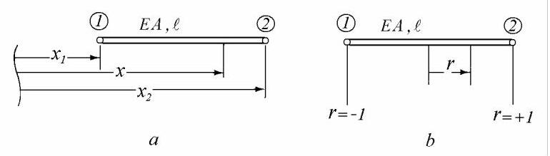
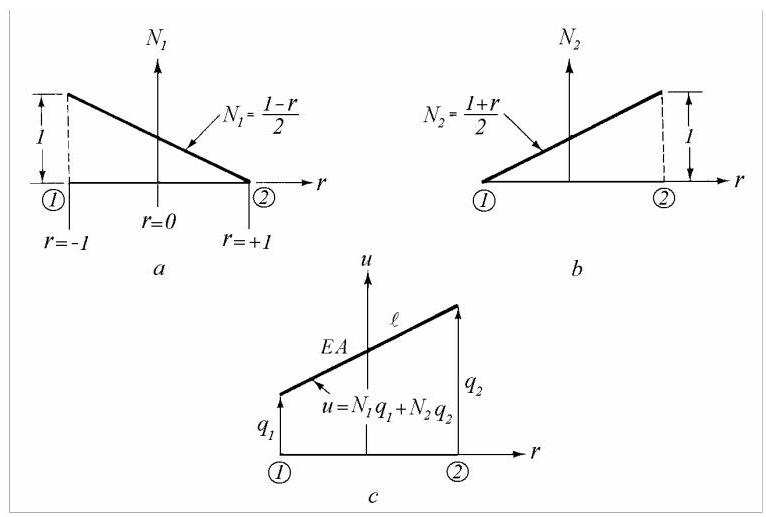
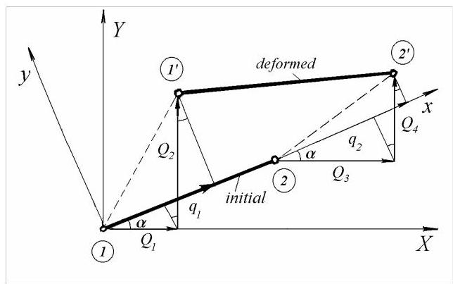
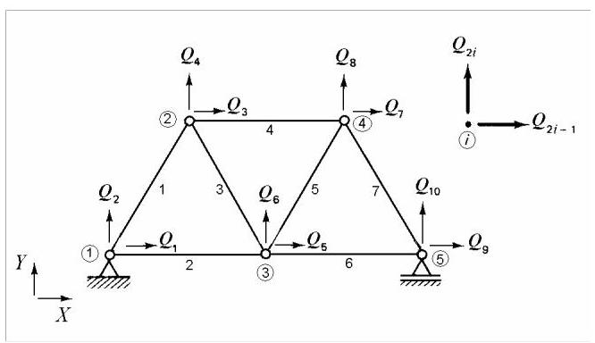
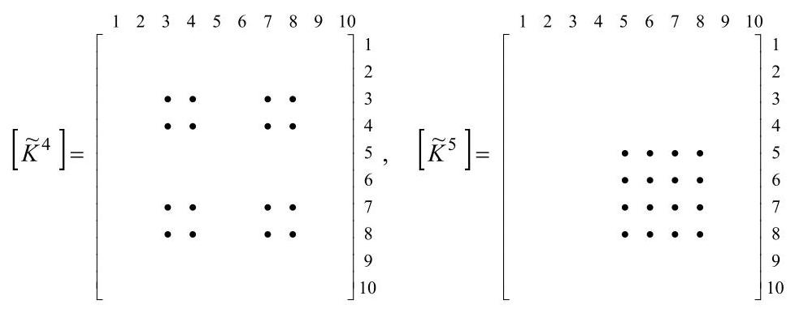

第25篇
5.2 平面桁架
桁架结构由铰接杆件组成。桁架的主要简化假设是所有杆件端部通过无摩擦铰接连接，因此不能相互传递弯矩。
实际中，桁架节点通过铆接、焊接或螺栓连接实现。然而，采用铰接的简化模型仍是一种出人意料的良好工程近似。桁架单元只能承受拉力或压力，分别称为拉杆(ties)和压杆(struts)。刚性节点结构将在5.3节讨论。
在桁架中，要求所有荷载和反力仅作用于节点，且杆件轴向刚度恒定，因此它们是天然的有限单元。为考虑桁架杆件的空间方向，需使用局部坐标系和整体坐标系。下文将先在局部坐标系中计算单元刚度矩阵和质量矩阵，再转换到整体坐标系。后者可扩展至系统规模，然后直接相加得到用于特征值问题或动力响应计算的整体刚度矩阵和整体质量矩阵。
5.2.1 桁架单元的坐标与形函数
考虑一个两节点铰接单元，位于其自身或局部坐标系中。节点方便地编号为\(I\)和2，它们在物理(笛卡尔)参考系中的坐标分别为\({x}_{1}\)和\({x}_{2}\)(图5.18，a)。

图5.18
我们定义一个自然参考系，允许用一个无量纲数指定单元内一点
\[
r = \frac{2}{{x}_{2} - {x}_{1}}\left( {x - \frac{{x}_{1} + {x}_{2}}{2}}\right) \tag{5.22}
\]
使得在节点1处\(r = - 1\)，在节点2处\(r = + 1\)(图5.18，b)。用自然坐标表示物理坐标可得
\[
x = {N}_{1}\left( r\right) {x}_{1} + {N}_{2}\left( r\right) {x}_{2}, \tag{5.23}
\]
其中
\[
{N}_{1}\left( r\right) = \frac{1}{2}\left( {1 - r}\right) \text{ and }{N}_{2}\left( r\right) = \frac{1}{2}\left( {1 + r}\right) \tag{5.24}
\]
可视为几何插值函数。这些函数的图形如图\({5.19}, a, b\)所示。

图5.19
对于两节点杆单元，可假设位移呈线性分布。单元内任意点的位移可用节点位移\({q}_{1}\)和\({q}_{2}\)表示为
\[
u\left( r\right) = {N}_{1}\left( r\right) {q}_{1} + {N}_{2}\left( r\right) {q}_{2}. \tag{5.25}
\]
用矩阵表示
\[
u = \mathop{\sum }\limits_{{i = 1}}^{2}{N}_{i}{q}_{i} = \lfloor N\rfloor \left\{ {q}^{e}\right\} , \tag{5.26}
\]
其中
\[
\lfloor N\rfloor = \left\lfloor \begin{array}{ll} {N}_{1} & {N}_{2} \end{array}\right\rfloor \;\text{ and }\;\left\{ {q}^{e}\right\} = {\left\{ \begin{array}{ll} {q}_{1} & {q}_{2} \end{array}\right\} }^{T}. \tag{5.27}
\]
在式(5.26)中，\(\left\{ {q}^{e}\right\}\)称为单元位移向量，\(\lfloor N\rfloor\)为位移插值函数的行向量，亦称形函数(shape functions)。易验证:在节点1处\(u = {q}_{1}\)，在节点2处\(u = {q}_{2}\)，且\(u\)呈线性变化(图5.19，\(c\))。
式(5.23)和(5.25)表明，单元几何与位移场均采用相同的形函数插值，此称为等参(isoparametric)表述。
5.2.2 局部坐标系中的单元刚度矩阵与质量矩阵
在动力分析中，位移是空间与时间的函数\(u = u\left( {x, t}\right)\)，应变为\(\varepsilon = \partial u/\partial x\)，应力为\(\sigma = {E\varepsilon }\)。
单元应变能\({U}_{e}\left( t\right)\)为
\[
{U}_{e} = \frac{1}{2}{\int }_{e}{\sigma \varepsilon dV} = \frac{1}{2}{\int }_{e}{E}_{e}{\varepsilon }^{2}{A}_{e}{dx} = \frac{{E}_{e}{A}_{e}}{2}{\int }_{e}{\left( \frac{\partial u}{\partial x}\right) }^{2}{dx}. \tag{5.28}
\]
由式(5.22)的\(x\)到\(r\)变换得
\[
{dx} = \frac{{x}_{2} - {x}_{1}}{2}{dr} = \frac{{\ell }_{e}}{2}{dr}, \tag{5.29}
\]
其中\(- 1 \leq r \leq + 1\)，单元长度为\({\ell }_{e} = \left| {{x}_{2} - {x}_{1}}\right|\)。
因\(\frac{\partial u}{\partial x} = \left\lfloor \frac{\partial N}{\partial x}\right\rfloor \left\{ {q}^{e}\right\}\)且\(\frac{\partial N}{\partial x} = \frac{\partial N}{\partial r}\frac{\partial r}{\partial x} = \frac{2}{{\ell }_{e}}\frac{\partial N}{\partial r}\)，其中\(\frac{\partial {N}_{1}}{\partial r} = - \frac{1}{2}\)且\(\frac{\partial {N}_{2}}{\partial r} = + \frac{1}{2}\)，故可写\({\left( \frac{\partial u}{\partial x}\right) }^{2} = {\left\{ {q}^{e}\right\} }^{T}{\left\lbrack \frac{\partial N}{\partial x}\right\rbrack }^{T}\left| \frac{\partial N}{\partial x}\right| \left\{ {q}^{e}\right\}\)，于是单元应变能(5.28)变为
\[
{U}_{e} = \frac{1}{2}{\left\{ {q}^{e}\right\} }^{T}\frac{2{E}_{e}{A}_{e}}{{\ell }_{e}}{\int }_{-1}^{+1}{\left| \frac{\partial N}{\partial r}\right| }^{T}\left\lfloor \frac{\partial N}{\partial r}\right\rfloor {dr}\left\{ {q}^{e}\right\} . \tag{5.30}
\]
上式形式为
\[
{U}_{e} = \frac{1}{2}{\left\{ {q}^{e}\right\} }^{T}\left\lbrack {k}^{e}\right\rbrack \left\{ {q}^{e}\right\} , \tag{5.31}
\]
其中单元刚度矩阵\(\left\lbrack {k}^{e}\right\rbrack\)由下式给出
\[
\left\lbrack {k}^{e}\right\rbrack = \frac{2{E}_{e}{A}_{e}}{{\ell }_{e}}{\int }_{-1}^{+1}{\left\lbrack \frac{\partial N}{\partial r}\right\rbrack }^{T}\left\lfloor \frac{\partial N}{\partial r}\right\rfloor {dr} = \frac{2{E}_{e}{A}_{e}}{{\ell }_{e}}{\int }_{-1}^{+1}\left\{ \begin{matrix} - 1/2 \\ 1/2 \end{matrix}\right\} \left\lfloor {-\frac{1}{2}\;\frac{1}{2}}\right\rfloor {dr}
\]
\[
\left\lbrack {k}^{e}\right\rbrack = \frac{{E}_{e}{A}_{e}}{{\ell }_{e}}\left\lbrack \begin{array}{rr} 1 & - 1 \\ - 1 & 1 \end{array}\right\rbrack . \tag{5.32}
\]
单元动能\({T}_{e}\left( t\right)\)为
\[
{T}_{e} = \frac{\rho {A}_{e}}{2}{\int }_{e}{\left( \frac{\partial u}{\partial t}\right) }^{2}{dx}. \tag{5.33}
\]
其中\(\rho\)为单位体积的材料质量，\(\partial u/\partial t = \dot{u}\)为\(x\)处的速度。
由(5.26)可得
\[
\dot{u} = \lfloor N\rfloor \left\{ {\dot{q}}^{e}\right\} , \tag{5.34}
\]
其中\(\left\{ {\dot{q}}^{e}\right\}\)为节点速度列向量。
将(5.34)代入方程(5.33)得
\[
{T}_{e} = \frac{1}{2}{\left\{ {\dot{q}}^{e}\right\} }^{T}\rho {A}_{e}{\int }_{e}\lfloor N{\rfloor }^{T}\lfloor N\rfloor {dx}\left\{ {\dot{q}}^{e}\right\} . \tag{5.35}
\]
方程(5.35)的形式为
\[
{T}_{e} = \frac{1}{2}{\left\{ {\dot{q}}^{e}\right\} }^{T}\left\lbrack {m}^{e}\right\rbrack \left\{ {\dot{q}}^{e}\right\} . \tag{5.36}
\]
其中
\[
\left\lbrack {m}^{e}\right\rbrack = \rho {A}_{e}{\int }_{e}\lfloor N{\rfloor }^{T}\lfloor N\rfloor {dx} \tag{5.37}
\]
称为单元一致质量矩阵(consistent mass matrix)。其计算过程及所用形函数与单元刚度矩阵相同。
变量变换
\[
\left\lbrack {m}^{e}\right\rbrack = \frac{\rho {A}_{e}{\ell }_{e}}{2}{\int }_{-1}^{+1}\lfloor N{\rfloor }^{T}\lfloor N\rfloor {dr} = \frac{\rho {A}_{e}{\ell }_{e}}{8}{\int }_{-1}^{+1}\left\lbrack \begin{matrix} {\left( 1 - r\right) }^{2} & 1 - {r}^{2} \\ 1 - {r}^{2} & {\left( 1 + r\right) }^{2} \end{matrix}\right\rbrack {dr}
\]
或
\[
\left\lbrack {m}^{e}\right\rbrack = \frac{\rho {A}_{e}{\ell }_{e}}{6}\left\lbrack \begin{array}{ll} 2 & 1 \\ 1 & 2 \end{array}\right\rbrack . \tag{5.38}
\]
5.2.3 从局部坐标到全局坐标的转换
图5.20所示为一典型平面桁架单元，图中同时绘出了局部坐标系\({xOy}\)和全局坐标系\({XOY}\)。节点位移在局部坐标系中用小写字母表示，在全局坐标系中用大写字母表示。
在全局坐标系中，每个节点具有两个自由度(degrees of freedom, dof)。全局节点编号为\(j\)的节点对应自由度\({2j} - 1\)和\({2j}\)，位移为\({Q}_{{2j} - 1}\)和\({Q}_{2j}\)。
由图5.20可见，\({q}_{1}\)等于\({Q}_{1}\)和\({Q}_{2}\)在\(x\)轴上投影之和，因此
\[
{q}_{1} = {Q}_{1}\cos \alpha + {Q}_{2}\sin \alpha \tag{5.39, a}
\]
同理
\[
{q}_{2} = {Q}_{3}\cos \alpha + {Q}_{4}\sin \alpha \tag{5.39, b}
\]

图5.20
方程(5.39)可写成矩阵形式
\[
\left\{ {q}^{e}\right\} = \left\lbrack {T}^{e}\right\rbrack \left\{ {Q}^{e}\right\} , \tag{5.40}
\]
其中\(\left\{ {q}^{e}\right\} = {\left\{ \begin{array}{ll} {q}_{1} & {q}_{2} \end{array}\right\} }^{T}\)为局部坐标系中的单元位移向量，\(\left\{ {Q}^{e}\right\} = {\left\{ {Q}_{1},{Q}_{2},{Q}_{3},{Q}_{4}\right\} }^{T}\)为全局坐标系中的单元位移向量，且
\[
\left\lbrack {T}^{e}\right\rbrack = \left\lbrack \begin{matrix} \cos \alpha & \sin \alpha & 0 & 0 \\ 0 & 0 & \cos \alpha & \sin \alpha \end{matrix}\right\rbrack \tag{5.41}
\]
为坐标转换矩阵。
根据节点坐标数据，记\(\left( {{X}_{1},{Y}_{1}}\right)\)和\(\left( {{X}_{2},{Y}_{2}}\right)\)分别为节点1和节点2的坐标，可得
\[
\cos \alpha = \frac{{X}_{2} - {X}_{1}}{{\ell }_{e}},\sin \alpha = \frac{{Y}_{2} - {Y}_{1}}{{\ell }_{e}},{\ell }_{e} = \sqrt{{\left( {X}_{2} - {X}_{1}\right) }^{2} + {\left( {Y}_{2} - {Y}_{1}\right) }^{2}}. \tag{5.42}
\]
矩阵(5.41)的元素由上述方程计算。
5.2.4 全局坐标系中的单元刚度矩阵与质量矩阵
将方程(5.40)代入局部坐标系中单元应变能表达式(5.31)，得到
\[
{U}_{e} = \frac{1}{2}{\left\{ {Q}^{e}\right\} }^{T}\left\lbrack {T}^{e}\right\rbrack T\left\lbrack {k}^{e}\right\rbrack \left\lbrack {T}^{e}\right\rbrack \left\{ {Q}^{e}\right\} . \tag{5.43}
\]
全局坐标系中的应变能可写为
\[
{U}_{e} = \frac{1}{2}{\left\{ {Q}^{e}\right\} }^{T}\left\lbrack {K}^{e}\right\rbrack \left\{ {Q}^{e}\right\} , \tag{5.44}
\]
其中\(\left\lbrack {K}^{e}\right\rbrack\)为全局坐标系中的单元刚度矩阵。
比较方程(5.43)与(5.44)，可得全局坐标系中的刚度矩阵为
\[
\left\lbrack {K}^{e}\right\rbrack = \left\lbrack {T}^{e}\right\rbrack {}^{T}\left\lbrack {k}^{e}\right\rbrack \left\lbrack {T}^{e}\right\rbrack . \tag{5.45}
\]
将方程(5.41)中的\(\left\lbrack {T}^{e}\right\rbrack\)和方程(5.32)中的\(\left\lbrack {k}^{e}\right\rbrack\)代入，得到
\[
\left\lbrack {K}^{e}\right\rbrack = \frac{{E}_{e}{A}_{e}}{{\ell }_{e}}\left\lbrack \begin{matrix} {c}^{2} & {cs} & - {c}^{2} & - {cs} \\ {cs} & {s}^{2} & - {cs} & - {s}^{2} \\ - {c}^{2} & - {cs} & {c}^{2} & {cs} \\ - {cs} & - {s}^{2} & {cs} & {s}^{2} \end{matrix}\right\rbrack , \tag{5.46}
\]
其中\(c = \cos \alpha\)和\(s = \sin \alpha\)。
类似地，全局坐标系中的动能可写为
\[
{T}_{e} = \frac{1}{2}{\left\{ {\dot{Q}}^{e}\right\} }^{T}\left\lbrack {M}^{e}\right\rbrack \left\{ {\dot{Q}}^{e}\right\} . \tag{5.47}
\]
全局坐标系中的单元一致质量矩阵为
\[
\left\lbrack {M}^{e}\right\rbrack = \left\lbrack {T}^{e}\right\rbrack T\left\lbrack {m}^{e}\right\rbrack \left\lbrack {T}^{e}\right\rbrack ,
\]
或将方程(5.41)中的\(\left\lbrack {T}^{e}\right\rbrack\)和方程(5.38)中的\(\left\lbrack {m}^{e}\right\rbrack\)代入
\[
\left\lbrack {M}^{e}\right\rbrack = \frac{\rho {A}_{e}{\ell }_{e}}{6}\left\lbrack \begin{matrix} 2{c}^{2} & {2cs} & {c}^{2} & {cs} \\ {2cs} & 2{s}^{2} & {cs} & {s}^{2} \\ {c}^{2} & {cs} & 2{c}^{2} & {2cs} \\ {cs} & {s}^{2} & {2cs} & 2{s}^{2} \end{matrix}\right\rbrack . \tag{5.48}
\]
该矩阵为奇异矩阵(阶数4，秩1)，因为单元未接地。秩亏等于三种可能的刚体运动。
5.2.5 刚度矩阵与质量矩阵的组装
全局刚度矩阵和质量矩阵\(\left\lbrack K\right\rbrack\)与\(\left\lbrack M\right\rbrack\)由单元矩阵\(\left\lbrack {K}^{e}\right\rbrack\)和\(\left\lbrack {M}^{e}\right\rbrack\)根据单元连接信息组装而成。
单元层面的节点位移与整个桁架结构层面的节点位移的相容性，可用如下形式的方程表示
\[
\left\{ {Q}^{e}\right\} = \left\lbrack {\widetilde{T}}^{e}\right\rbrack \{ \bar{Q}\} , \tag{5.49}
\]
其中\(\left\{ {Q}^{e}\right\}\)为全局坐标系下的单元位移向量，\(\{ \bar{Q}\}\)为桁架结构的完整位移向量，\(\left\lbrack {\widetilde{T}}^{e}\right\rbrack\)称为连接矩阵(connectivity matrix)或定位矩阵(localisation matrix)，在单元节点自由度处为1，其余位置为0。
将(5.49)代入(5.44)，全局坐标系下的单元应变能可用全局位移向量表示为
\[
{U}_{e} = \frac{1}{2}\{ \bar{Q}{\} }^{T}\left\lbrack {\widetilde{T}}^{e}\right\rbrack {}^{T}\left\lbrack {K}^{e}\right\rbrack \left\lbrack {\widetilde{T}}^{e}\right\rbrack \left\{ \bar{Q}\right\}
\]
或
\[
{U}_{e} = \frac{1}{2}\{ \bar{Q}{\} }^{T}\left\lbrack {\widetilde{K}}^{e}\right\rbrack \{ \bar{Q}\} ,
\]
其中扩展后的单元刚度矩阵
\[
\left\lbrack {\widetilde{K}}^{e}\right\rbrack = \left\lbrack {\widetilde{T}}^{e}\right\rbrack {}^{T}\left\lbrack {K}^{e}\right\rbrack \left\lbrack {\widetilde{T}}^{e}\right\rbrack \tag{5.50}
\]
具有与系统矩阵相同的维数。
为说明这一点，考虑图5.21所示的七杆桁架。
单元4的连接矩阵(其两节点编号不连续)为
\[
\left\lbrack {\widetilde{T}}^{4}\right\rbrack = \left\lbrack \begin{array}{llllllllll} 0 & 0 & 1 & 0 & 0 & 0 & 0 & 0 & 0 & \\ 0 & 0 & 0 & 1 & 0 & 0 & 0 & 0 & 0 & \\ 0 & 0 & 0 & 0 & 0 & 0 & 1 & 0 & 0 & 0 \\ 0 & 0 & 0 & 0 & 0 & 0 & 0 & 1 & 0 & 0 \end{array}\right\rbrack
\]
而单元5(其两节点编号连续)的连接矩阵为
\[
\left\lbrack {\widetilde{T}}^{5}\right\rbrack = \left\lbrack \begin{array}{llllllllll} 0 & 0 & 0 & 0 & 1 & 0 & 0 & 0 & 0 & 0 \\ 0 & 0 & 0 & 0 & 0 & 1 & 0 & 0 & 0 & 0 \\ 0 & 0 & 0 & 0 & 0 & 0 & 1 & 0 & 0 & 0 \\ 0 & 0 & 0 & 0 & 0 & 0 & 0 & 1 & 0 & 0 \end{array}\right\rbrack .
\]

图5.21
对应的扩展刚度矩阵形式为

可以想象结构是通过逐个添加单元构建的，每个单元被放置在预定位置。随着单元加入结构，它们对结构的承载能力作出贡献，从而贡献于结构刚度矩阵。只要单元矩阵具有“结构尺寸”并作用于相同的位移向量，便可通过叠加单元刚度矩阵获得整个结构的刚度矩阵。将扩展后的单元刚度矩阵简单相加即可得到结构刚度矩阵。
完整桁架结构的应变能
\[
U = \frac{1}{2}\{ \bar{Q}{\} }^{T}\left\lbrack \bar{K}\right\rbrack \{ \bar{Q}\} , \tag{5.51}
\]
可通过简单叠加各单元应变能计算
\[
U = \mathop{\sum }\limits_{e}{U}_{e} = \mathop{\sum }\limits_{e}\frac{1}{2}\{ \bar{Q}{\} }^{T}\left\lbrack {\widetilde{K}}^{e}\right\rbrack \left\{ \bar{Q}\right\} = \frac{1}{2}\{ \bar{Q}{\} }^{T}\mathop{\sum }\limits_{e}\left\lbrack {\widetilde{K}}^{e}\right\rbrack \left\{ \bar{Q}\right\} . \tag{5.52}
\]
比较(5.51)与(5.52)可得
\[
\left\lbrack \bar{K}\right\rbrack = \mathop{\sum }\limits_{e}\left\lbrack {\widetilde{K}}^{e}\right\rbrack . \tag{5.53}
\]
整体刚度矩阵(global stiffness matrix)等于扩展后的单元刚度矩阵之和。
类似地，整体质量矩阵(global mass matrix)\(\left\lbrack \bar{M}\right\rbrack\)由扩展后的单元质量矩阵组装而成，如下所示
\[
\left\lbrack \bar{M}\right\rbrack = \mathop{\sum }\limits_{e}\left\lbrack {\widetilde{M}}^{e}\right\rbrack = \mathop{\sum }\limits_{e}\left\lbrack {\widetilde{T}}^{e}\right\rbrack T\left\lbrack {M}^{e}\right\rbrack \left\lbrack {\widetilde{T}}^{e}\right\rbrack . \tag{5.54}
\]
对于自由-自由系统，使用未缩减的刚度矩阵和质量矩阵\(\left\lbrack \bar{K}\right\rbrack\)和\(\left\lbrack \bar{M}\right\rbrack\)；对于接地系统，则利用边界条件对其进行凝聚(condensed)。
集中质量(lumped masses)和弹簧的影响可通过在相应矩阵主对角线的适当位置添加其数值来计入。